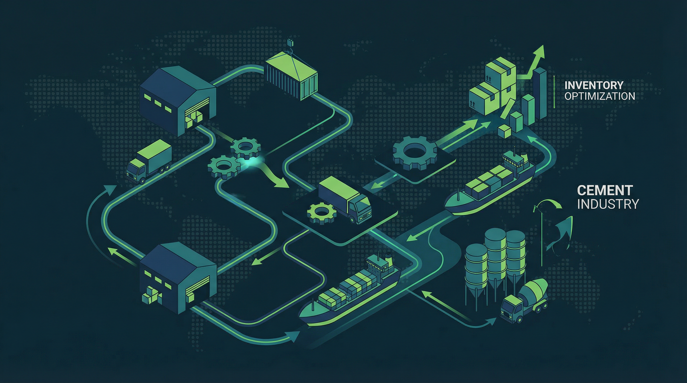
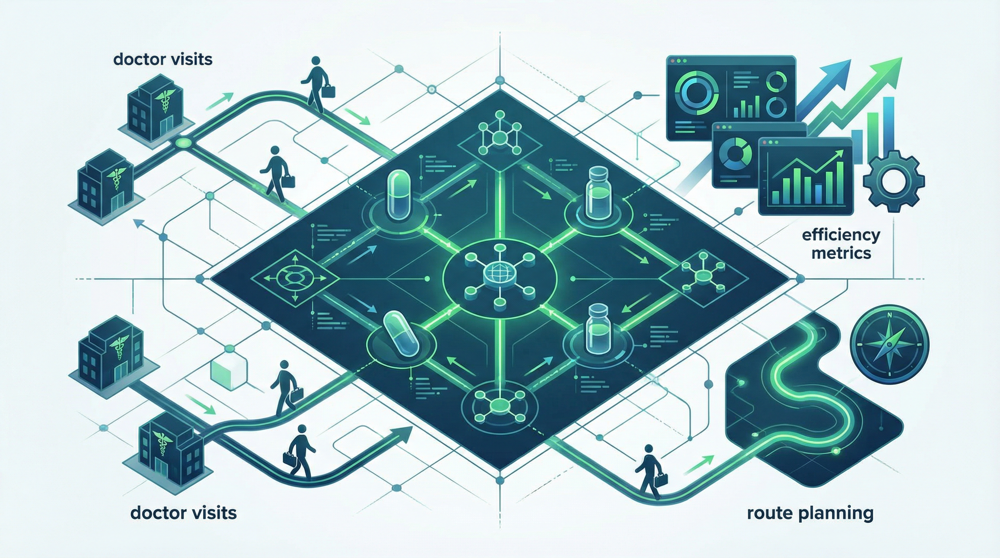

Our cross-domain expertise is our greatest strength, forged through a proven history of delivering high-impact solutions for a global clientele.
Notable Clients: Citibank, Mashreq Bank, Prudential, TATA AIG
Implemented advanced machine learning models to predict customer delinquency 90 days in advance, enabling proactive intervention strategies and reducing NPAs significantly.
View DetailsDeveloped AI-driven hyper-personalization system for a multinational bank’s digital platform, analyzing customer behavior patterns to deliver tailored product recommendations.
View DetailsNotable Clients: Jaguar Land Rover, UltraTech Cement
Implemented end-to-end supply chain analytics platform integrating demand forecasting, inventory optimization, and logistics planning.
View Details
Deployed IoT-enabled predictive maintenance solution using machine learning to forecast equipment failures.
View DetailsNotable Clients: Woolworths, Nestlé, Procter & Gamble
Developed sophisticated look-alike modeling and customer segmentation framework for international retail chain with 500+ stores.
View DetailsBuilt advanced demand forecasting models incorporating seasonality, promotions, and external factors.
View Details
Simulator based MMM for pharma brand portfolio.
View DetailsAI powered medical sample allocation system.
View Details